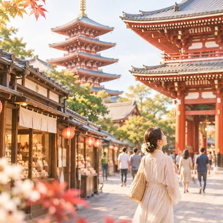
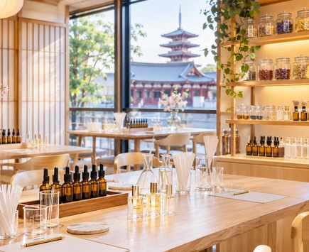
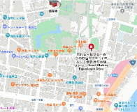

香りをつくって、
今日の浅草へ。
好きな香りを選び、あなただけの香りをつくる。
できあがった香りをまとって、浅草のまちを歩く。
香りとともにめぐる、特別な一日へ。
香りの旅
つくって、まとって、浅草のまちへ。
-
香りを選ぶ
好きな香りの素材を選んで、
香りのイメージを描く。 -
つくる
濃度を決めて、
自分だけの香りをつくる。 -
まとって
完成した香りを
その場でまとってみる。 -

浅草へ
香りとともに、
浅草のまちをめぐる。
香り作りを楽しめる、3つのポイント
初めての方も、自分らしい香りづくりを。
-
はじめてでも安心
スタッフが丁寧に、
分かりやすく説明します -
自分だけの香り
12種以上の香料から自分好みの香り
を選んでブレンドできます -
旅のお土産に
作っていただいた香水と4種の香りの
ビンをお持ち帰りいただけます
ワークショップ基本情報
- 料金
- ￥5,500／名
- 所要時間
- 約60分
- 開催曜日
- 土・日・祝日
- 開催場所
- inimu浅草店 （雷門 徒歩3分）
- 定員人数
- 1〜10名 （1予約あたり） ワークショップ不参加での同伴は席の都合上お断りしております。予めご了承くださいませ。
- 持ち帰れるもの
- 完成した香りアイテム オリジナル香水1点に加え、お選びいただいた4種の香料もお持ち帰りいただけます。

inimu とは
「つくる」を楽しむ交流場
inimu（イニム）は、浅草にある体験型香りのものづくりストア。
「つくる」を楽しむ交流場をコンセプトに、香りづくり体験をはじめ、
日本のものづくりを活かした香りの商品や、職人・作り手たちが手掛けた
こだわりの品々を取り揃えています。香りを楽しみながら、
ものづくりの背景や作り手の想いにも触れられる場所です。
よくある質問
所要時間はどのくらいですか？
体験は約60分です。開始10分前までに、店舗1階で受付をお願いします。
予約は必要ですか？
希望する日時の空き状況を予約ページで確認し、事前にお申し込みください。
当日は何を持っていけばよいですか？
受付で、じゃらんの予約完了画面をご提示ください。
予約後のキャンセルはできますか？
キャンセルの締切や料金は、ご予約先のプラン詳細にあるキャンセル規定をご確認ください。
浅草で、自分だけの香りに出会える体験を。
開催日時を確認するアクセス
inimu 浅草店
東京都台東区浅草2-1-5TEL 070-7401-3069
営業時間：10:30-18:00 月曜定休日
※月曜が祝日の場合、翌火曜日が定休日
＜浅草駅からのアクセス＞
- 東京メトロ銀座線【浅草駅】6番口より徒歩2分
- 都営地下鉄浅草線【浅草駅】A5番出口より徒歩5分
- 東武スカイツリーライン【浅草駅】北改札より徒歩2分
- つくばエクスプレス【浅草駅】A1出口より徒歩6分
